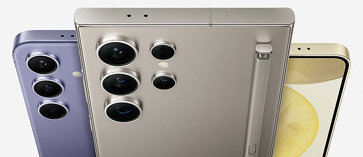

Samsung is a South Korean multinational conglomerate headquartered in Seoul, known for its wide array of products and services across various industries, including electronics, shipbuilding, construction, and more. Founded in 1938 by Lee Byung-chul, Samsung began as a trading company, dealing primarily in groceries and local produce. Over the decades, it evolved significantly, branching out into various sectors and becoming a global leader in technology and innovation.Throughout the 1960s and 1970s, Samsung began to diversify its business interests. The company ventured into textiles, food processing, and insurance, but it was in the late 1960s that it entered the electronics sector, which would become its most prominent division. The establishment of Samsung Electronics in 1969 marked a pivotal moment for the company. Initially producing black-and-white televisions, the company gradually expanded its product range to include home appliances, semiconductor chips, and eventually, smartphones.
Samsung is widely recognized for its commitment to research and development, investing billions annually to maintain its competitive edge. The company played a crucial role in the development of the semiconductor industry, becoming one of the largest producers of memory chips globally. This focus on innovation led to significant advancements in display technology, particularly with the introduction of AMOLED screens, which are now prevalent in many smartphones and televisions. In the smartphone market, Samsung has established itself as a leading brand with its Galaxy series, which includes flagship models like the Galaxy S and Note series. These devices are celebrated for their high-quality displays, advanced camera technology, and robust performance. Samsung's ability to innovate quickly and adapt to consumer trends has allowed it to compete effectively with rivals like Apple and Huawei.